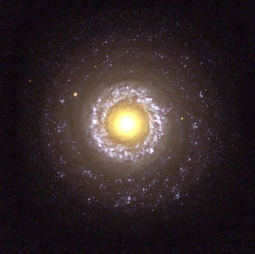
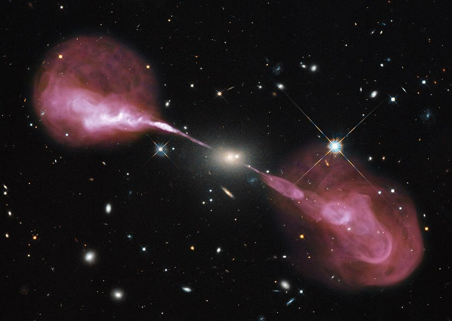

허블은 은하를 겉모양으로 나눴습니다. 그런데 모양이 다른 은하는 그 속에 든 별과 가스도 다를까요? 또 겉모양은 평범한데 다른 파장으로 보면 전혀 다른 모습을 드러내는 은하도 있습니다.
| 유형 | 성간 물질(가스·먼지) | 주로 이루는 별 | 색 |
|---|---|---|---|
| 타원 은하 | 매우 적음 | 나이 많은 붉은 별. 새 별이 거의 태어나지 않음 | 붉은색 |
| 나선 은하 | 원반과 나선팔에 많음 | 팽대부와 헤일로에는 늙은 별, 나선팔에는 젊고 푸른 별 | 팽대부는 노랗고 팔은 푸름 |
| 불규칙 은하 | 비율이 가장 높음 | 젊은 별이 많고 별 탄생이 활발함 | 푸른색 |
별은 성간 물질에서 태어납니다. 가스가 거의 남지 않은 타원 은하에서는 새 별이 태어나지 못해 늙은 별만 남았고, 가스가 많은 나선팔과 불규칙 은하에서는 지금도 별이 태어납니다. 푸르고 무거운 별은 수명이 짧아서, 푸른빛이 보인다는 것은 최근에 별이 태어났다는 증거입니다.
보통 은하의 빛은 수많은 별빛의 합이라 스펙트럼에 별 대기가 만든 흡수선이 보입니다. 그런데 어떤 은하는 중심의 아주 작은 부분에서 은하 전체보다 많은 에너지를 내고, 스펙트럼에 강한 방출선이 나타납니다. 이런 은하를 특이 은하라 하며, 중심의 초대질량 블랙홀로 물질이 빨려 들어가며 뜨거워져 빛을 낸다고 설명합니다.


| 특이 은하 | 관측적 특징 |
|---|---|
| 세이퍼트은하 | 대부분 나선 은하. 중심핵이 매우 밝고, 스펙트럼의 방출선이 넓게 퍼져 있음. 방출선이 넓다는 것은 도플러 효과로 보아 중심부 가스가 초속 수천 km로 빠르게 움직인다는 뜻 |
| 전파 은하 | 대부분 타원 은하. 가시광보다 전파를 훨씬 강하게 냄. 중심핵에서 양쪽으로 제트가 뻗고, 그 끝에 은하보다 큰 로브가 있음 |
| 퀘이사 | 별처럼 점으로 보이지만 적색 편이가 매우 커서 아주 먼 곳에 있음. 보통 은하 수십~수백 개만 한 에너지를 태양계 정도 크기의 영역에서 냄 |
이 은하들의 특징은 한 파장만 보아서는 알기 어렵습니다. 가시광 사진, 전파 지도, X선 영상, 스펙트럼을 함께 놓고 보아야 중심에서 무슨 일이 일어나는지 추론할 수 있습니다.
판단허블의 분류와 특이 은하는 서로 다른 기준입니다. 허블 분류는 겉모양(형태)으로 나눈 것이고, 특이 은하는 중심핵의 활동으로 구별한 것입니다. 그래서 세이퍼트은하는 허블 분류로는 나선 은하이고, 전파 은하는 타원 은하입니다.
어떤 은하의 가시광 사진은 평범한 타원 은하처럼 보입니다. 이 은하가 특이 은하인지 확인하려면 무엇을 찾아보는 것이 가장 좋을까요?